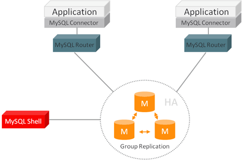

分布式基础（二二）——分布式理论之高性能：读写分离
一、简介
对于大多数业务来说，读相关业务的操作频次要远远高于写相关的。再者，从操作系统的角度来讲，读磁盘的I/O速度也要远快于写磁盘的I/O速度。所以，针对读写操作的优化也由来已久，从最常见的读写锁，再到操作系统的CopyOnWrite等等。
对于分布式应用，读写分离就是针对一种读/写操作的优化，其基本原理是将读/写操作分散到不同的节点上，下面是读写分离的基本架构图：

1.1 示例
我们来通过一个示例，更好的理解下为什么要进行读写分离。
假设有一个系统A，每秒平均交易量为6000笔，其中写请求1000笔/s，读请求5000笔/s，分布式缓存承载了4000笔/s的读请求，所以最终数据库承担的读写请求总共2000笔/s：
对于MySQL来说，每秒2000笔/s读写请求基本是上限了，此时响应速度会变得非常慢。所以，我们对数据库进行主从架构部署，如下图，进行一主三从的部署，读请求全部访问从库，写请求全部访问主库，数据库的压力就降下来了：
二、实现方式
读写分离的基本实现是：
- 数据库服务器搭建主从集群（一主一从或一主多从）；
- 数据库主机负责读写操作，从机只负责读操作；
- 数据库主机通过复制将数据同步到从机（每个节点都存储了所有业务数据）；
- 业务服务器将写操作发给数据库主机，将读操作发给数据库从机。
读写分离并不只针对数据库，其它存储系统也可以作读写分离，比如Redis也支持读写分离，本文主要针对数据库介绍读写分离的基本思想。
2.1 复制原理
以MySQL为例，其Replication 是一个异步的复制过程，复制通过Binary Log 实现，整个复制过程实际上就是 Slave节点 从Master节点获取binlog日志，然后再顺序执行日志中所记录的各种操作。
整个复制过程主要由三个线程来完成：
① Master端的I/O线程；
② Slave端的I/O线程；
③ Slave端的SQL线程。
整个复制步骤如下：
- Slave的I/O线程连接上Master，并请求获取binlog日志内容；
- Master 接收到请求后，自身负责复制的I/O 线程根据请求信息读取指定位置的日志信息，返回给Slave 端。返回信息中除了日志信息外，还包括Binary Log文件名称及位置；
- Slave 的I/O 线程接收到回复后，将接收到的日志内容依次写入到Relay Log 文件的最末端，并将Master端的binlog文件名和位置记录到master-info 文件中，这样在下一次读取的时候能够告诉Master需要哪个bin-log 的哪个位置之后的日志内容，实现增量复制；
- Slave 的SQL线程检测到Relay Log 中新增了内容后，会立即解析该Log文件为可执行的Query 语句，然后执行。这样就保持了Slave 端和Master 端的数据一致。
2.2 复制延迟
从库同步数据的过程是串行化的，也就是说主库上并行的操作，在从库上会串行执行。所以在高并发场景下，从库的数据一定会比主库慢一些，是有延时的，经常可能出现刚写入主库的数据从库是读不到的情况，要过几十毫秒，甚至几百毫秒才能读取到，写并发越高，延迟越严重。
MySQL自5.6.x版本后，引入了一个并行复制的机制，用来解决主从同步延时问题 。所谓并行复制，就是从库开启多个线程，每个线程从Relay Log中读取一个库的日志进行重放，也就是说是库级别的并行，但是问题是库级别的并行有时候作用不是很大。
所以，MySQL读写分离，一般建议使用在读远多于写的场景，且对读的数据时效性要求没那么高，对于时效性要求高的数据（写了之后立马就要保证可以查到），则应该采用强制读主库的方式。
可以在从库上执行show slave status命令，查看到Seconds_Behind_Master，该字段表示slave落后master的秒数。
复制延迟很容易导致生产问题，17年的时候，笔者曾经负责的一个P2P系统就出现过这个问题，当时在做资金清算的时候，插入库中的一个记录在后续的一个查询中没有找到记录，导致某个融资还款项目清算中止，一开始怎么都排查不到问题所在，每隔两周左右就会出现一次这种情况，只能通过临时数据维护和重新发起清算解决。
所以，针对复制延迟问题，一般的综合解决方案如下：
- 首先是分库，比如原来写并发2000/s，那么水平拆成4个主库，每个主库的写并发就500/s，此时主从延迟可以忽略不计；
- 打开MySQL支持的并行复制功能，多个库并行复制（但是如果某个库的写入并发就是特别高，单库写并发达到了2000/s，这种情况下其实并行复制没啥作用）；
- 对于一些关键业务，如果确实需要插入后立即查询，可以将读写操作全部指向主库（一般通过数据库中间件做），非关键业务采用读写分离，读从库失败后再读一次主库。
2.3 数据丢失
所谓数据丢失，就是如果主库突然宕机，然后恰好数据还没同步到从库，那么有些数据可能在从库上是没有的，这些数据可能就丢失了。
MySQL有一个半同步复制（semi-sync）机制，用来解决主库数据丢失问题。即主库写入binlog日志之后，会立即强制将数据同步到从库，从库将日志写入自己本地的relay log之后，接着会返回一个ack给主库，主库接收到至少一个从库的ack之后才会认为写操作完成了。当然，缺点就是降低了吞吐量。
三、请求路由
在进行读写分离，还有一个关键考虑点——请求路由，就是要将读写操作区分开来，读操作路由到从库，写操作路由到主库，一般有两种方式：程序代码封装和中间件封装。
程序代码封装
程序代码封装指在代码中抽象一个数据访问层，实现读写操作分离和数据库服务器连接的管理。例如，基于 Hibernate 进行简单封装，就可以实现读写分离，基本架构是：

程序代码封装的方式具有以下特点：
- 实现简单，而且可以根据业务做较多定制化的功能；
- 故障情况下，如果主从发生切换，则可能需要所有系统都修改配置并重启。
目前开源的实现方案中，Sharding-JDBC 就是一个通用数据访问层，它在Java的JDBC层提供的额外服务，使用客户端直连数据库，以jar包形式提供服务，无需额外部署和依赖，可理解为增强版的JDBC驱动。Sharding-JDBC的基本架构是：
中间件封装
中间件封装，指独立出一套系统，用于专门实现读写操作分离和数据库服务器连接的管理。中间件对业务服务器提供 SQL 兼容的协议，业务服务器无须自己实现读写分离。对于业务服务器来说，访问中间件和访问数据库没有区别，事实上在业务服务器看来，中间件就是一个数据库服务器。其基本架构是：

中间件封装的方式具有以下特点：
- 支持多种编程语言，对业务服务器提供标准 SQL 接口；
- 支持完整的 SQL 语法和数据库服务器协议，实现复杂；
- 数据库中间件不执行真正的读写操作，但所有的数据库操作请求都要经过中间件，所以对中间件的性能要求也很高；
- 数据库主从切换对业务服务器无感知，数据库中间件可以探测数据库服务器的主从状态。例如，向某个测试表写入一条数据，成功的就是主机，失败的就是从机。
目前的开源数据库中间件方案中，主要有MySQL Router、Atlas、Mycat。
MySQL Router 是MySQL 官方推荐的数据库中间件，主要功能有读写分离、故障自动切换、负载均衡、连接池等，其基本架构如下：

Atlas 是奇虎 360 公司开源的数据库中间件，基于 MySQL Proxy 实现的：
Mycat是目前最主流的开源数据库中间件，其基本架构如下：

四、总结
本文以数据库为例，介绍了存储系统读写分离的基本思想。目前最主流的开源数据库中间件就是Mycat，Mycat不仅可以用作读写分离，还支持数据分片、分库分表、自动故障切换等功能，在后续章节中，我们会以Mycat为例，介绍其基本使用和原理。